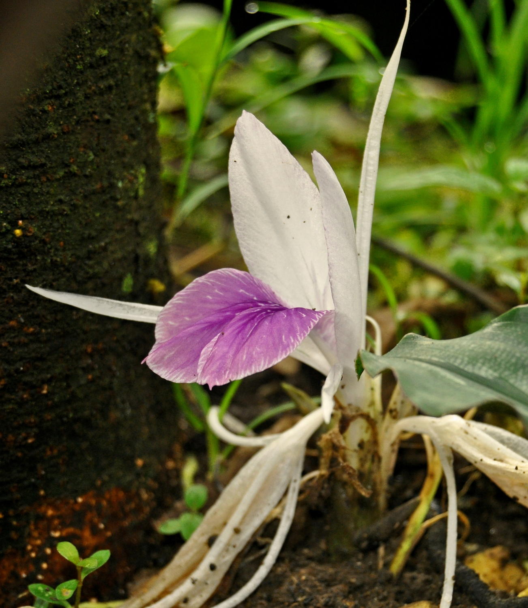

Zingiberaceae
ginger family
Alpinia zerumbet (shell ginger) from Wikimedia Commons by Tatiana Gerus, CC BY 2.0 |
 Kaempferia rotunda (Asian ginger) from Wikimedia Commons by Wibowo Djatmiko (Wie146) - Own work, CC BY-SA 3.0 |
Amomum subulatum (black cardamom) from Wikimedia Commons by Praptipanigrahi - Own work, CC BY-SA 3.0 |
Etlingera elatior (torch ginger) from Wikimedia Commons by Scott Zona, CC BY 2.0 |
{kind=link}
{kind=link}
{kind=link}
{kind=link}
botanical characteristics
"Zingiberaceae", Wikipedia
- growth form
- aromatic perennial herbs with creeping rhizomes, sometimes tuberous
- stems/leaves
- distichous leaves with basal sheaths that overlap to form a pseudostem
- flowers
- flowers are hermaphroditic, usually strongly zygomorphic (bilaterally symmetric), in determinate cymose inflorescences, and subtended by conspicuous, spirally arranged bracts
- perianth is composed of two whorls, a fused tubular calyx, and a tubular corolla with one lobe larger than the other two
- reproductive structures
- flowers typically have two of their stamenoids (sterile stamens) fused to form a petaloid lip, and have only one fertile stamen
- ovary is positioned inferior and topped by two nectaries, the stigma is funnel-shaped
distribution
"Zingiberaceae", Wikipedia
- 58 genera and about 1600 described species
- distributed globally in the tropics and subtropics
ecological roles
"Zingiberales (Gingers and Bananas)", ResearchGate
- prominent component of forest understorey vegetation in the humid tropics around the world
- a remarkable number of pollination mechanisms have evolved including insect, bird and bat pollination
"A Review on Zingiberaceae", IRJMETS
- plants in this family thrive in humid, shaded environments, particularly in tropical rainforests, and play a crucial role in ecological interactions, including pollination by insects such as bees and butterflies
- members exhibit significant morphological diversity, with spiral phyllotaxy, ligulate leaves, and a unique floral structure that includes petaloid labella, fused stamens, and highly specialized reproductive organs
- the presence of underground rhizomes allows for vegetative propagation, contributing to their resilience and adaptability in diverse ecological niches
common pharmacological constituents
"Angiosperm families - Zingiberaceae Lindl.", DELTA
- accumulated starch other than exclusively ‘pteridophyte type’; yanogenic (?Hedychium), or not cyanogenic; anthraquinones detected (Aframomum, Curcuma); derived from shikimic acid, or polyacetate derived; saponins/sapogenins present (Alpinia), or absent; proanthocyanidins present (usually), or absent (Globba); delphinidin (Brachychilum), or cyanidin and delphinidin; flavonols present (Globba, Brachychilum), or absent (4 genera); kaempferol (in Globba), or myricetin (sic — in Brachychilum); ellagic acid absent; sieve-tube plastids P-type
patterns in medicinal actions
- brimming with life/energy
- strengthens the function of several body systems: circulatory, immune, digestive, respiratory, skeletal, integumentary, reproductive
- pushes inflammation out of the body; inflammation and the energy of Zingiberaceae plants cannot coexist, these plants expand energetically within the body and inflammation must leave
traditional/cultural uses
"Zingiberaceae", Wikipedia | "A Review on Zingiberaceae", IRJMETS
- many of the family's species are important ornamental, spice, or medicinal plants
- major crops like ginger (Zingiber officinale), turmeric (Curcuma longa), and cardamom (Elettaria cardamomum) are high-value commodities in international trade
- extracts of curcumin, gingerol, and essential oils are widely used in medicines, nutraceuticals, and herbal formulations
- essential oils from turmeric, ginger, and galangal are used in skincare, aromatherapy, and personal care products
- Zingiberaceae species are integral to global cuisines, valued for their aromatic flavors, medicinal benefits, and preservative properties
warnings
- no known family-wide warnings
extra information
prominent genera
- Aframomum (incl. melegueta pepper)
- Alpinia (shell gingers, incl. galangal)
- Amomum (incl. black cardamom)
- Curcuma (incl. turmeric)
- Elettaria (incl. cardamom)
- Etlingera (incl. torch ginger)
- Hedychium (garland flowers, ginger lilies)
- Kaempferia (incl. galangal)
- Zingiber (gingers)
plant highlights
see list of materia medica entries here
Elettaria cardamomum
from Wikimedia Commons by Melanurya - Own work, Public Domain |
common names: cardamom en español: cardamomo, grana del paraíso |
{kind=link}
description
"Elettaria cardamomum", Wikipedia
- pungent, aromatic, herbaceous, perennial plant
- leaves are alternate in two ranks, linear-lanceolate, with a long pointed tip
- flowers are white to lilac or pale violet, produced in a loose spike
- fruit is a three-sided yellow-green pod, containing several (15-20) black and brown seeds
distribution
"Elettaria cardamomum", Wikipedia
- native to southern India
- cultivated widely in tropical regions and reportedly naturalized in Réunion, Indochina, and Costa Rica
medicinal/magical uses
The Modern Herbal Dispensatory, p. 204
- aromatic, carminative, warming, slightly drying
- acts as a carminiative and digestive aid
- has a reputation as an aphrodisiac
- used in India for respiratory and kidney ailments
The New Age Herbalist, p. 128
- aromatic spice that stimulates the digestion, easing bowel spasms and flatulence
- often combined with bitter rememdies (for flavor) and used to prevent the griping effect of laxative formulations
preparation methods
The Modern Herbal Dispensatory, p. 204
- dried seeds
- infusion
- tincture
warnings
The Modern Herbal Dispensatory, p. 204
- no known warnings
sources
"Angiosperm families - Zingiberaceae Lindl." on DELTA - DEscription Language for TAxonomy. Retrieved 3 September 2025.
Easely, Thomas and Steven Horne. The Modern Herbal Dispensatory (2016)
Goldberg Blackthorn, Samantha. Ace of Cups Herbal Medicine and Botanical Magic Herbal School (2024)
Mabey, Richard et al. The New Age Herbalist (1988)
Prince, Linda M. and W. John Kress. "Zingiberales (Gingers and Bananas)" (2002) on ResearchGate. Retrieved 3 September 2025.
Wable, Aniket R., Shraddha E. Belge, Tejasvi S. Wagh, Pratik S. Dokhe, Aakash N. Mahajan. "A Review on Zingiberaceae" (2025) on IRJMETS. Retrieved 3 September 2025.
"Zingiberaceae" on Wikipedia. Retrieved 3 September 2025.